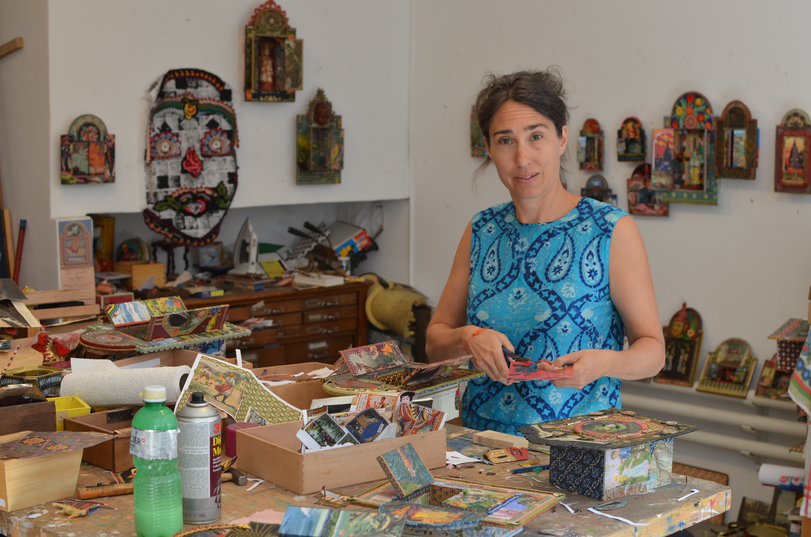

Willkommen in der Welt der schreine & Totems
„Cajitas“
Öffnest du die törchen, so betritt dein Blick eine sphäre
mit einem bestimmten thema, einer bestimmten Stimmung: Liebe, Fernweh, Erinnerungen, Exotisches,
Persönliches, Heiliges...
Cajitas können auch individuell bestellt werden.
Willkomen in der Welt der Schreine & Totems "Cajitas".
Öffnest du die Törchen Öffnest du die Törchen. Öffnest du die Törchen Öffnest du die Törchen Öffnest du die Törchen. Öffnest du die Törchen Öffnest du die Törchen.
Mariposa 400.- CHF
Mariposa 400.- CHF
Mariposa 400.- CHF
Mariposa 400.- CHF
Mariposa 400.- CHF
weitere 2 oder evtl 3 reihen mit je 3 fotos
die muss ich selber austauschen können


Über mich

Nicole Wiederkehr
seit 1996 als freischaffende gestalterin und kunsthandwerkerin tätig.
Ausstellungen (auswahl):
Galerie ONO Bern
Galerie Atelier Worb
Galeri Artis Büren an der Aare
Galerie Neurotitan Berlin
Galerie casita bern
Ausstattungen, Dekorationen,
gestaltungsaufträge für
schaufenster,innen-&aussenräume
Kontakt: nicole@cajitas.ch
079 416 66 81
instagram: cajitas_bern